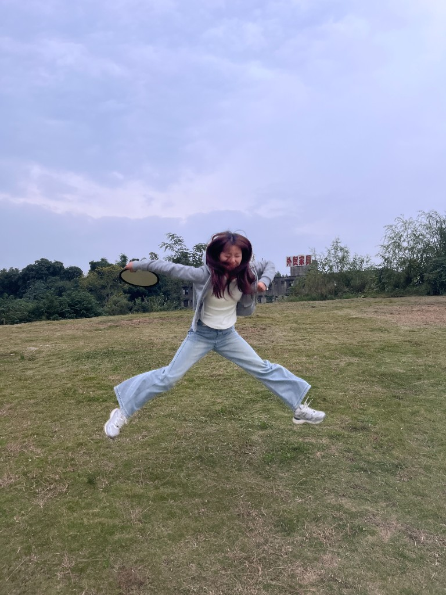
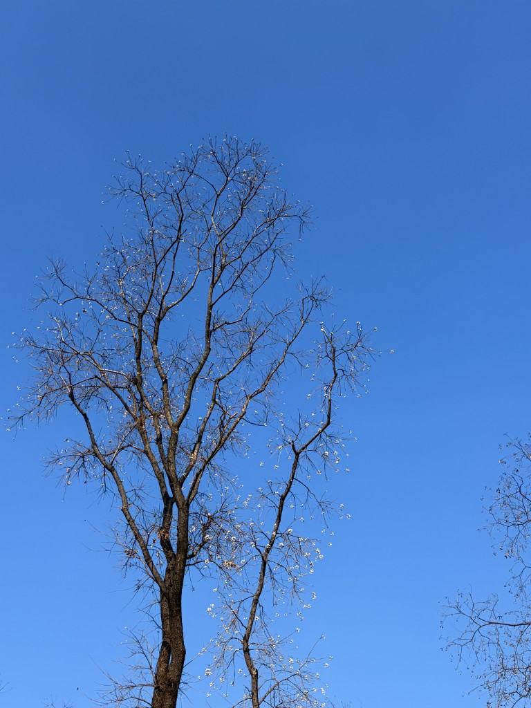
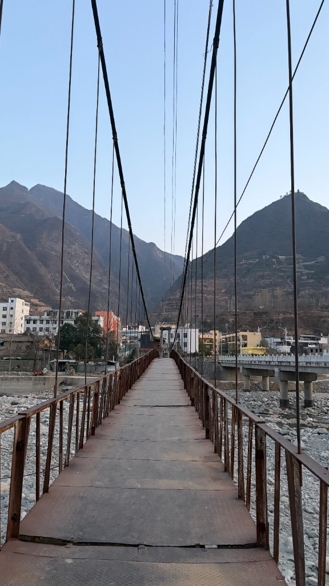
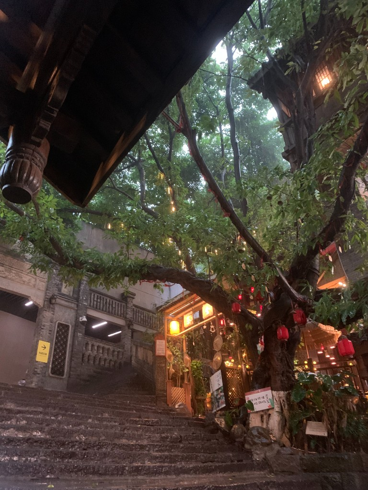
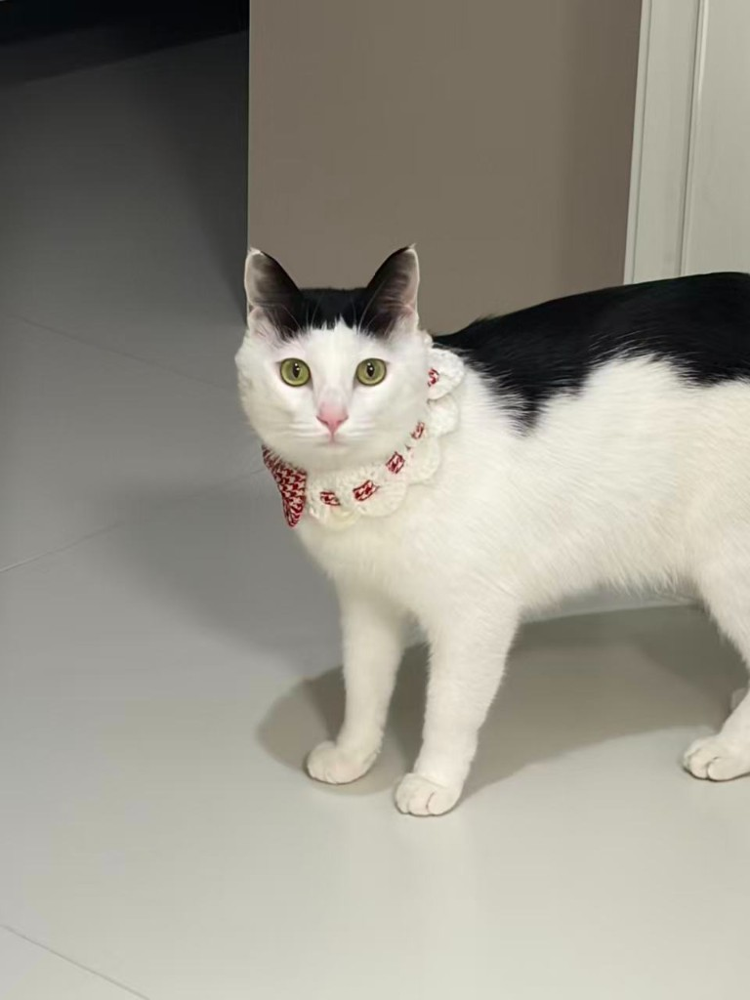
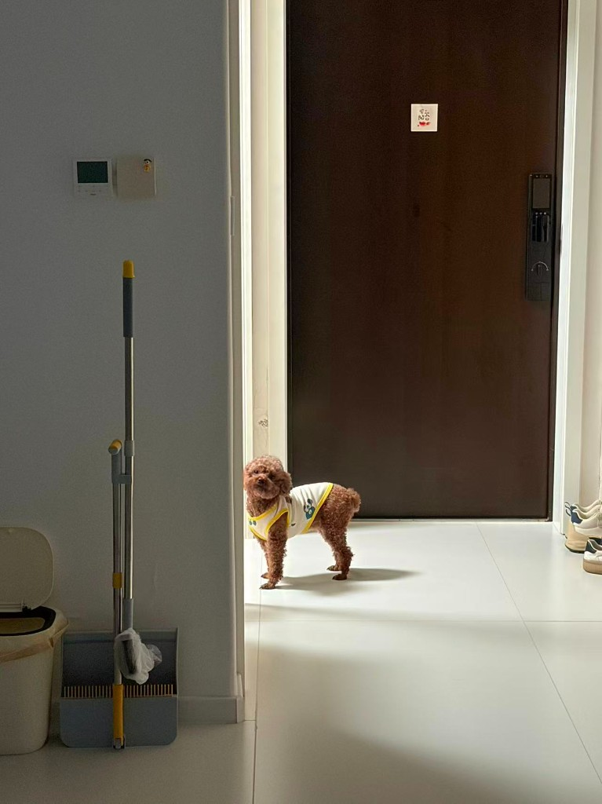

西湖黄昏
2025年拍摄于杭州西湖，记录落日与西湖的交融。
Personal Portfolio
喜欢玩游戏、养宠物以及拍照。白天在财务和报表里穿梭，空闲时拿起手机或相机，记录猫猫狗狗、 城市角落，还有那些不起眼但很柔软的日常。
* 若需更新链接，直接修改本按钮的 href 即可。
本地预览链接：
http://127.0.0.1:8000/index.html
若打不开，请先关闭之前的黑色窗口，再在此文件夹双击 start-server.bat 重新启动本地服务。

部分 2025 年的随拍：西湖、寺庙、老家与重庆十八梯。
图片使用 loading="lazy" 懒加载，滚动到附近时再加载。
2025年拍摄于杭州西湖，记录落日与西湖的交融。
2025年冬拍摄于西湖，波光粼粼的湖面，像被风翻动的日记。

2025年冬拍摄于杭州一所寺庙，枝干像安静站立多年的老人。

2025年冬拍摄于老家，冷空气里的灯光和炊烟，让记忆变得更清晰。

2025年夏拍摄于重庆十八梯，台阶、房屋和电线交织成一幅立体的城市画。
关于摄影、宠物和生活的小记录。
新手小白可以多看B站和抖音等很多作者发布的摄影技巧以及构图技巧，可以跟着学习， 一边模仿一边尝试，很快就能找到自己的习惯视角。
我的两只爱宠——一只田园猫、一只泰迪狗狗。它们陪我度过很多普通但很治愈的日子。


我是杨容，毕业于成都东软学院财务管理专业。曾在物流行业做会计，在大疆代理商做出纳，
一边和数字打交道，一边也在用图片和文字记录生活。
喜欢玩游戏、养小动物和随手拍照。游戏带来专注和默契，摄影帮我留下稍纵即逝的情绪，
和猫狗相处则让我学会了更多耐心和责任。这个网站是一个小小的作品架，慢慢往里面放东西。
2019 - 2023 · 成都东软学院 · 本科 · 财务管理
自由摄影师 · 图文创作者
2023 - 至今
为多家自媒体提供配图和基础修图服务，同时在抖音等平台分享摄影、宠物和生活相关内容，逐步形成自己的审美和表达方式。
财务相关工作
物流行业会计 · 大疆代理商出纳
负责日常账务处理、费用核算与资金管理，在高节奏环境中保持细致和稳定，也把这种耐心带入自己的创作和生活。